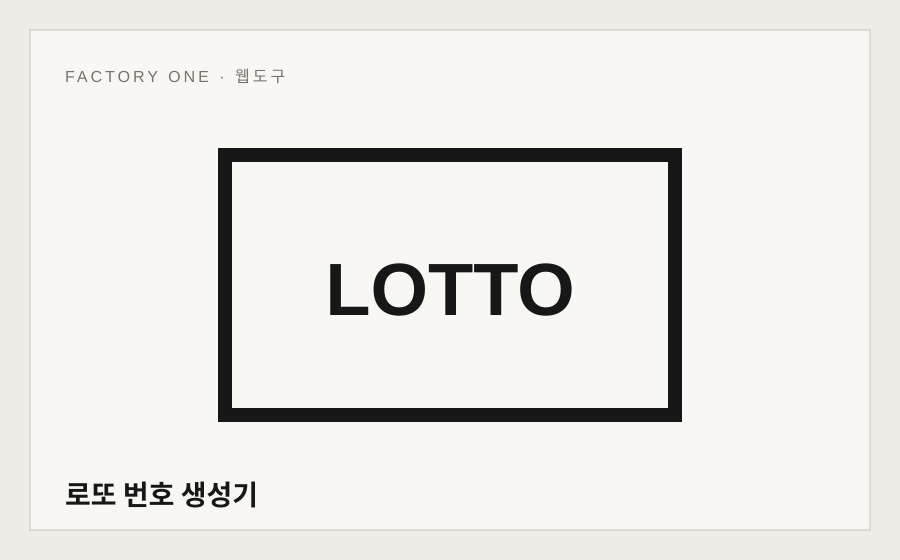
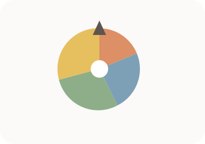

로또 번호 생성기
1~45 번호 조합을 여러 게임 생성합니다.
번호·랜덤 센터FREE
번호 생성과 간단한 랜덤 도구. 자주 쓰는 기능을 한 센터에 모아 원하는 작업으로 바로 이동할 수 있게 정리했습니다.


1~45 번호 조합을 여러 게임 생성합니다.

이름·번호·메뉴 후보를 넣고 원하는 개수만큼 중복 없이 추첨합니다.
필요한 작업을 선택하면 각 도구의 실행 화면으로 이동합니다. 개별 도구 페이지에서는 기능만 제공하는 데 그치지 않고 입력 방법, 결과 확인 방법, 실제 사용 예시와 주의사항을 함께 확인할 수 있도록 계속 보강합니다. 자주 함께 사용하는 기능은 관련 도구로 연결해 여러 작업을 이어서 처리하기 쉽게 구성합니다.
현재 이 센터에 표시된 웹도구는 무료로 사용할 수 있습니다.
TOOLS 통합센터 검색창에서 작업명이나 파일 형식, 계산하려는 항목을 입력하면 관련 센터와 도구를 찾을 수 있습니다.